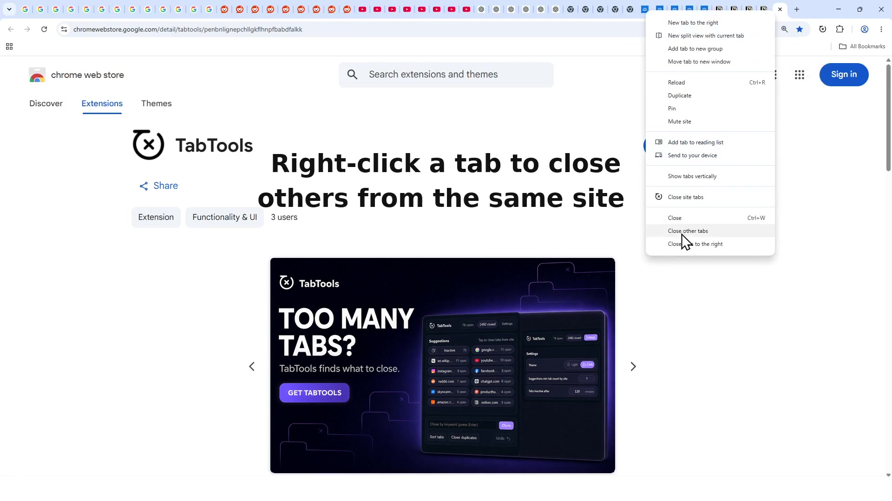

01 / Site cleanup
Close every tab from a website
Right-click a tab, choose Close site tabs, and TabTools finds the other tabs from that domain.
See the three-step flowTab management, without the drama
Right-click one tab and clear the rest of that website in a single action. TabTools also removes duplicates, sorts tabs by site, and clears the ones you have left behind.
Opens the Chrome Web Store. No account required. Remove it whenever you like.

The useful shortcuts
TabTools keeps cleanup close to your browser, so a busy window does not become a second job.
01 / Site cleanup
Right-click a tab, choose Close site tabs, and TabTools finds the other tabs from that domain.
See the three-step flow02 / Find
Target the tabs you want to close without scanning every window.
03 / Simplify
Clear repeated pages in one click and keep the copy you need.
04 / Organise
Group open tabs by website and see where the clutter is concentrated.
05 / Reset
Choose how long a tab can sit idle before it qualifies for cleanup.
A small routine
TabTools stays out of the way until you need a quick, deliberate cleanup.
Try it freeOpen the store page for Chrome, Firefox, or Edge.
Right-click a tab when a website has taken over your window.
Close a site, remove duplicates, sort, or tidy inactive tabs.
Private by design
TabTools processes open-tab information locally in your browser. Preferences and cleanup statistics stay in local extension storage. There is no account, analytics, advertising, or external database.
Read the privacy policyQuestions, answered
Here are the details that matter before you try it.
Yes. TabTools is free to try and use.
TabTools is available for Chrome, Firefox, and Microsoft Edge. Use the browser links on this page to open the right store.
Right-click one of the tabs, choose “Close site tabs,” and TabTools closes the other open tabs from that site. You can also use the popup to search by a keyword or exact domain.
Yes. The popup includes actions for duplicate tabs and inactive tabs, with a threshold you can choose for inactivity.
Preferences such as your theme and suggestion threshold, plus local statistics such as the number of tabs closed with TabTools. Tab information is processed on your device and is not sent to the developer.
Ready for fewer tabs?